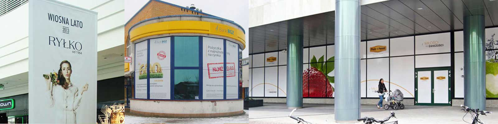

Montaż
Profesjonalne prace montażowe w całej Polsce

W instalprint.pl oferujemy pełen zakres usług związanych z montażem i serwisem reklam świetlnych oraz innych form reklamy zewnętrznej.
Nasze doświadczenie razem z foxmedia.com.pl i rzetelność gwarantują, że każda instalacja przebiega sprawnie, bezpiecznie i estetycznie. Działamy głównie we Wrocławiu i na Dolnym Śląsku, ale obsługujemy także klientów w całej Polsce i Europie.
Do każdego zlecenia podchodzimy indywidualnie, analizując warunki techniczne i lokalizację. Dzięki temu montaż szyldów, kasetonów LED czy pylonów reklamowych zawsze jest dopasowany do potrzeb i otoczenia. Bez względu na to, czy instalujemy pojedynczy szyld, czy rozbudowany system reklamowy, działamy zgodnie z najwyższymi standardami bezpieczeństwa i jakości.
Oferujemy także wsparcie posprzedażowe – regularne przeglądy techniczne, które pozwalają utrzymać reklamę w idealnym stanie i uniknąć awarii. W razie usterki zapewniamy szybki serwis reklam we Wrocławiu i całej Polsce. Dysponujemy nowoczesnym sprzętem i częściami zamiennymi, co umożliwia nam skuteczne naprawy nawet na miejscu.
Montaż reklamy to nie tylko estetyka, ale i bezpieczeństwo. Źle zamontowany kaseton, pylon czy litery 3D mogą ulec uszkodzeniu i stanowić zagrożenie. Dlatego warto powierzyć to zadanie fachowcom z odpowiednim sprzętem i uprawnieniami.
W instalprint.pl korzystamy z nowoczesnych technologii montażowych, trwałych materiałów i dbamy o minimalizowanie utrudnień podczas prac. Nasz zespół posiada certyfikaty oraz doświadczenie w realizacji nawet najbardziej wymagających projektów.
Oferujemy montaż i obsługę takich form reklamy jak:
Reklama zewnętrzna jest narażona na wiatr, deszcz, śnieg i promienie UV. Nawet solidne materiały wymagają przeglądów i konserwacji.
W ramach serwisu wykonujemy:
Regularny serwis wydłuża żywotność reklam, podnosi bezpieczeństwo i utrzymuje wizerunek firmy na najwyższym poziomie.
Nasze ekipy instalprint.pl działają we Wrocławiu i na Dolnym Śląsku, ale realizujemy także zlecenia w innych regionach. Dzięki mobilności możemy obsługiwać ogólnopolskie projekty montażu i serwisu reklam.
Chcesz mieć pewność, że Twoja reklama będzie zamontowana solidnie i będzie działała przez lata? Zaufaj instalprint.pl! Oferujemy profesjonalny montaż i serwis reklam świetlnych oraz innych form reklamy wizualnej.
Zapraszamy do kontaktu – doradzimy, przygotujemy ofertę i zadbamy o każdy szczegół realizacji.
W instalprint.pl wierzymy, że dobra reklama zaczyna się od pomysłu w foxmedia.com.pl, a kończy na perfekcyjnym montażu. Nasze portfolio obejmuje reklamy świetlne, kasetony LED, litery przestrzenne, pylony reklamowe, neony LED i oklejanie witryn dla firm z Wrocławia i całej Polski.
Wrocław to miasto, gdzie reklama świetlna szczególnie przyciąga uwagę. Wśród naszych realizacji znajdziesz:
Specjalizujemy się w literach przestrzennych z plexi, aluminium, dibondu czy stali nierdzewnej. Dzięki technologii CNC realizujemy nawet najbardziej wymagające projekty.
Wykonujemy także kasetony reklamowe – jednostronne i dwustronne – które świetnie sprawdzają się na wejściach i jako wolnostojące nośniki.
Realizujemy pylony reklamowe i totemy – od klasycznych form po zaawansowane konstrukcje z wymiennymi tablicami. Zapewniamy solidne fundamenty, stalowe konstrukcje i trwałe wykończenie.
Tworzymy neonowe napisy i logotypy z technologii LED, które są trwałe, energooszczędne i efektowne. Sprawdzają się w lokalach gastronomicznych, biurach i showroomach.
Wykonujemy oklejanie witryn foliami OWV, mrożonymi czy barwnymi oraz oznakowanie wayfinding w biurowcach, galeriach i osiedlach.
Każda realizacja kończy się profesjonalnym montażem i wsparciem serwisowym. Oferujemy serwis gwarancyjny i pogwarancyjny, aby reklamy działały bezproblemowo przez lata.
Zainspiruj się naszym portfolio i zbuduj widoczność marki z instalprint.pl. Skontaktuj się z nami – zaprojektujemy, wykonamy i zamontujemy reklamę, która działa!

Copyright 2008-2024 by Instalprint | Wszystkie prawa zastrzeżone